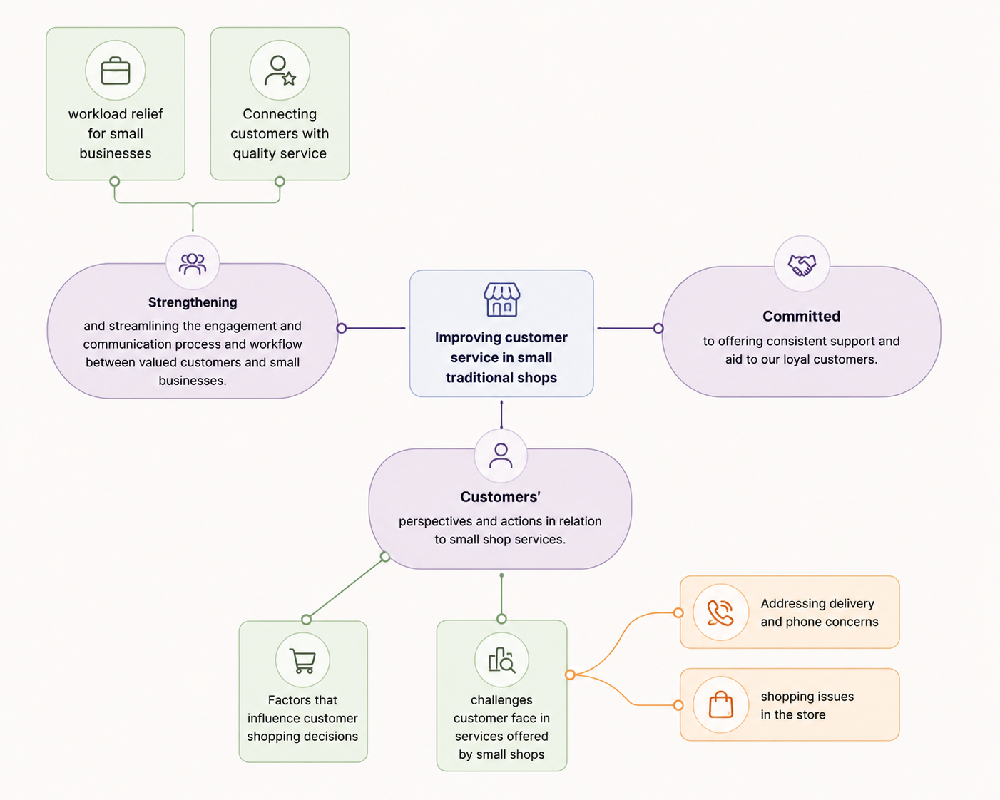
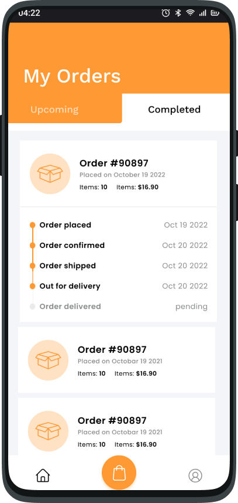
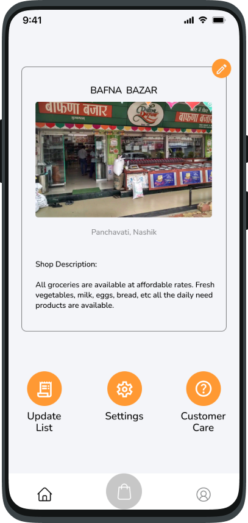

Online, but still the corner shop
A two-sided ordering app for India's kirana shops, shaped entirely by five interviews. The interesting part wasn't the ordering. It was working out what a digital shop is not allowed to flatten.

the short version
The context
A shop on every street, run the same way for decades.
Kirana and mom-and-pop stores sit on almost every street in India. People shop there out of habit and trust: the owner knows your name, remembers your usuals, and lets you settle up at the end of the month.
But the way they run has barely changed. Orders arrive by phone call, get written into a paper notebook, and go out on memory. As quick-commerce apps move into the same neighbourhoods, shops have no digital way to keep up without handing their customers to a platform that doesn't care who they are.
Could a digital tool help these shops without erasing the relationship that keeps people loyal?
The question the whole project was answering.
The research challenge
Two questions, and the second mattered as much as the first.
It would have been easy to bolt a generic e-commerce flow onto a kirana shop and call it progress. The harder question was what to protect: the trust, the familiarity, the owner's judgement.
I talked to people before I drew anything
Before opening Figma I ran five semi-structured interviews: three regular customers and two shop owners. I deliberately spoke to both sides, because a fix that helps the customer but adds work for the owner would never survive in a real shop.
Qualitative interviews were the right instrument. I needed the why behind the behaviour, the small frictions people never put on a survey, not another set of numbers.
What the research revealed
The pain was never the shopping. It was everything around it. One frustration surfaced in almost every conversation.
before I tell you
Which frustration do you think came up in almost every conversation?
Take a guess. It takes a second, and the answer lands harder.
{{ verdict }}
the friction, in one line
"I had to call again just to check where my order was."
Customer (C2).
and two more the conversations kept returning to
"I have to physically go and check if the product is even there."
Customer. Stock is invisible until you're standing in the shop.
Missed calls quietly become lost orders.
Owner, observed. When something goes wrong there is no record of what was promised.
but one thing has to stay exactly as it is
"People stay with a shop because of the person behind the counter."
Retailer. The owner's real asset is the relationship, not the catalogue, and that became the one thing the design was not allowed to flatten.
From transcripts to a pattern I could trust
I coded every transcript in NVivo, line by line, until the recurring statements clustered into three themes. Coding is how I told a real pattern from the loudest quote. Each code is anchored to a participant's own words and points up to a theme.

your turn at the transcripts
Four real quotes, three themes. Where would you file them?
{{ sortHint }}
Convenience & personalisation
Communication gaps
Loyalty & trust
{{ sortScore }}
{{ r.quote }}
{{ r.note }}
Three themes rose out of the data
Convenience & personalisation
People want clear product information and a checkout that fits a busy life, without having to be in the shop to find out what's there.
Communication gaps
The friction lives around the order, not in it: no confirmation, no tracking, no record. The phone carries everything.
Loyalty & trust
People stay for the person behind the counter. The owner's asset is the relationship, and digitising the shop must not flatten it.
Every feature traces back to a line of research
This is the bridge. Before drawing a single screen, I walked each theme through the same chain, so the design came out of the research and not out of my head. Read each row left to right.
Distilled, the whole strategy is three rules the design was not allowed to break: show it, don't make them ask · keep the shop personal · make it fast, and nearby-first.
Where the research became screens
Each theme became one screen. Read the finding on the left, see the answer on the right.
theme 01 · convenience
"I have to physically go and check if the product is even there."
So the home screen leads with nearby shops and live stock, the shelf, before you leave home.

theme 02 · communication
"I had to call again just to check where my order was."
So a live order status replaces the call, tracked from placed to delivered.

theme 03 · loyalty & trust
"People stay with a shop because of the person behind the counter."
So the owner keeps a real, self-managed storefront, name, photo, prices, never a faceless listing.
see it running
Everything the research asked for, in one flow
Nearby shops, live stock, order tracking, and an owner who stays in control, the whole thing in one thumb.
I took it back to the same people
I tested the prototype with the same participants and a short follow-up survey. The core flow held up. Payment options and order tracking landed best; the clearest ask was to make nearby shops easier to find, which became my first next step.
liked the flexible payment options
valued viewing and tracking all orders
found the navigation easy to follow
What I'd carry into the next round
The owner's world was the one I understood least at the start. Next time I'd recruit more shop owners and shadow a day behind the counter before designing anything.
Five participants was enough for depth, not for confidence. I'd validate the themes with a wider, quantitative pass before building further.
Nearby-shop discovery tested weakest. That's the first thing I'd redesign and re-test, not the checkout everyone already liked.
The honest part
Every project is a series of calls made with incomplete information. These are the three that matter most here, including the one I got wrong.
what I traded away
A full product catalogue. Owners do not keep stock data current, and a catalogue nobody updates is worse than none, so I designed around a short list of what is available today. The cost is real: the app cannot tell you about everything in the shop.
what I got wrong
I assumed price comparison would matter, and it was in my first sketches. Not one participant asked for it. What they wanted was to know where their order was, which is a far less interesting feature and a far more useful one.
what shipped imperfect
Order status is updated by hand, by an owner who is already serving three people. It is honest, but it leans on someone remembering. The better version reads the workflow that already exists instead of adding a new one.
Numbers and outcomes for client work are under NDA. Happy to walk through them in a conversation.